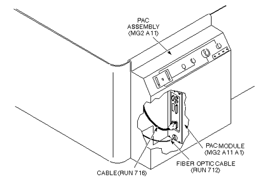
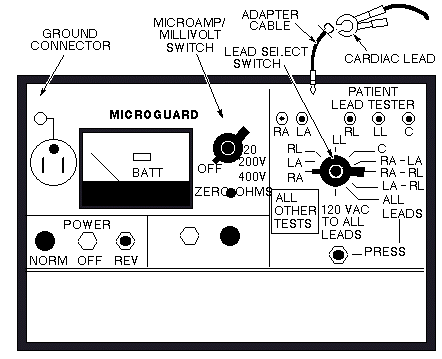

Operating Documentation
Direction 5133330-3, Rev# 14
Signa EXCITE HD 3.0T Service Methods
Module Version 1.0, Version Date 5/3/07
Operating Documentation |
| Required Persons | Preliminary Reqs | Procedure | Finalization |
|---|---|---|---|
| 1 | Not Applicable | 30 mins | 5 mins |
Be sure to understand Preliminary Requirements Before Beginning this Procedure.
Table 1: Ground Leakage Current Test
| This Procedure Covers: PAC Assembly Leakage Current Test Using Microguard and PAC Assembly Leakage Current Test Using Dale 600/600E Safety Analyzer |
| Item | Qty | Effectivity | Part# | Manufacturer | |
|---|---|---|---|---|---|
| Microguard MG-5 with adapter cables for cardiac leads. Meters other than the Microguard are currently also in use. Refer to the appropriate tool catalog for further information. | 1 | - | - | - | |
| Dale 600 (120VAC) or Dale 600E (220VAC) Safety Analyzer | 1 | - | - | - | |
| ||||
| LIKELY FATAL PERSONAL INJURY!! | ||||
| LETHAL VOLTAGES ARE PRESENT WITHIN THE PDU EVEN WHEN ALL PDU BREAKERS ARE OFF. | ||||
| CHECK THAT POWER AT THE MAIN DISCONNECT IS OFF, LOCKED, AND TAGGED BEFORE PROCEEDING. |
| Condition | Reference | Effectivity |
|---|---|---|
- | - | |
All cable installation complete. | - | - |
Facility disconnect off. | - | - |
PDU secondary power circuit breakers off. | - | - |
PDU Main Circuit Breaker CB1 in PDU is on. | - | - |
All subsystem cabinet circuit breakers and subsystem power switches are on. | - | - |
No hard wired signal cables connected to any subsystem cabinets. Fiber Optic cables may be connected and not impact this check. | - | - |
At physiological acquisition controller (PAC) assembly (MG2 A11), disconnect cables from PAC module (MG2 A11 A1): (Run 712) J9/J10 and (Run 716) J2. See Illustration 1.
Illustration 1: PAC Assembly

Remove PAC assembly from front trim skirt of magnet enclosure and move it into equipment room, near penetration panel (PP1).
Disconnect cable (Run 714) from J89 of PP1 (equipment room side).
Connect cable (Run 714) to J2 of PAC module.
Connect cardiac lead set to PAC assembly.
Plug Microguard meter into an outlet and place power switch in Norm position.
Install adapter cables into Microguard meter. See Illustration 2.
Illustration 2: Microguard Box

Connect cardiac leads to adapter cables. The leads and plugs are color-coded. See Illustration 2.
Check batteries in meter by turning Microamp/Millivolt switch to BATT- position. Meter needle should move into the BATT box. Turn Microamp/Millivolt switch to BATT+ position. Again, meter needle should move into the BATT box. See Illustration 2.
Connect a lead from ground connector on meter to any of four ECG Leads Test Points on PAC Aassembly.
Turn Microamp/Millivolt switch to 20 microamp position.
Move Lead Select switch through the positions shown in Table 2 and verify that leakage current displayed on meter is less than 10 microamps.
Table 2: Leakage Current Measurements
| LEAD SELECT POSITION |
| RA |
| LA |
| RL |
| LL |
| RA-LA |
| RA-RL |
| LA-RL |
Record data for steps 12 to 17 in Data Sheet in Table 3.
Move Lead Select switch to 120 Vac To All Leads position.
Coil up leads and place them approximately eight inches from a grounded surface such as a system cabinet.
Press button Lead Select switch and record the meter reading in Data Sheet.
Remove all leads from meter (including ground lead) and press the same button. Record meter reading in Data Sheet.
Subtract step 15 reading from step 16 reading. This must be less than 10 microamps. Record in Data Sheet.
Repeat steps 13–17 with power switch in the Reverse position.
System Restoration
Disconnect cardiac lead set from PAC assembly.
Disconnect cable (Run 714) from J2 of PAC module.
Connect cable (Run 714) to J89 of PP1 (equipment room side).
Install PAC assembly on front trim skirt of magnet enclosure. See Illustration 1.
Connect cables to PAC Module (MG2 A11 A1); (Run 712) J9/J10 and (Run 716) J2. See Illustration 1.
At physiological acquisition controller (PAC) assembly (MG2 A11), disconnect cables from PAC module (MG2 A11 A1): (Run 712) J9/J10 and (Run 716) J2. See Illustration 1.
Remove PAC assembly from front trim skirt of magnet enclosure and move it into equipment room.
Connect cardiac lead set into PAC assembly.
Connect cardiac leads to Dale 600/600E.
Connect a lead from C connector on Dale 600/600E to any of four ECG Leads Test Points on PAC assembly.
On the Dale 600/600E set the main selector switch to Leakage-Lead-Gnd.
Move Lead switch through positions shown in Table 2 and verify that leakage current displayed on meter is less than 10 microamps. Record data in Data Sheet in Table 3.
On the Dale 600/600E, set the main selector switch to Leakage-Lead-Lead.
Move Lead switch through positions shown in Table 2 and verify that leakage current displayed on meter is less than 10 microamps.
On the Dale 600/600E, set the main selector switch to Leakage-Lead-ISO.
Coil up leads and place them approximately eight inches from a grounded surface such as a system cabinet.
Press button ISO Test switch and record the meter reading in Data Sheet.
Remove all leads from meter (including ground lead) and press the same button. Record meter reading in Data Sheet.
Subtract step 13 reading from step 12 reading. This reading must be less than 10 microamps. Record in Data Sheet Table 3.
Repeat steps 10–14 with Polarity switch in the Reversed position.
System Restoration
1. Disconnect cardiac lead set from PAC assembly.
Install PAC assembly on front trim skirt of magnet enclosure. See Illustration 1.
Connect cables to PAC module (MG2 A11 A1); (Run 712) J9/J10 and (Run 716) J2. See Illustration 1.
Table 3: PHYSIOLOGICAL ACQUISITION CONTROLLER ASSEMBLY LEAKAGE CURRENT MEASUREMENTS
| LEAD SELECT POSITION | METER READING NORMAL POSITION (microamps) | METER READING REVERSE POSITION (microamps) |
| Right Arm (RA) | ||
| Left Arm (LA) | ||
| Right Leg (RL) | ||
| Left Leg (LL) | ||
| RA to LA | ||
| RA to RL | ||
| LA to RL | ||
| Coiled Leads | ||
| Leads Removed | ||
| Leads Removed (Coiled Leads) |
Ensure the system is ready for patient scans.